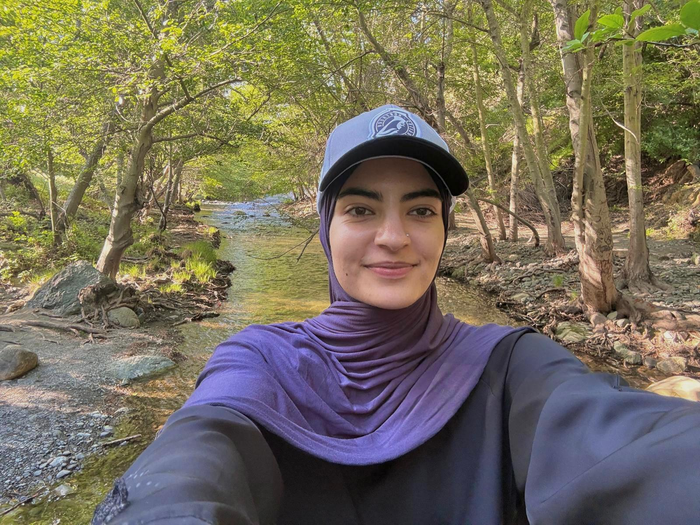
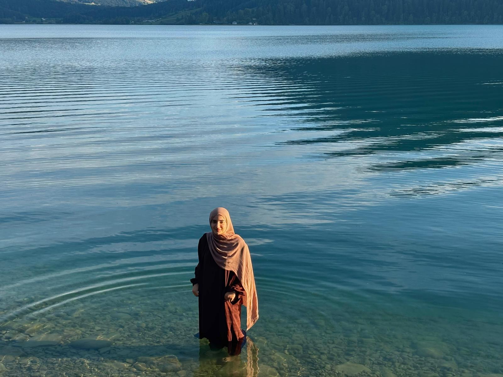
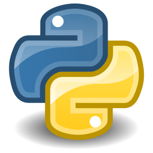
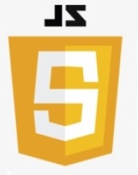
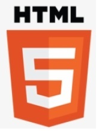
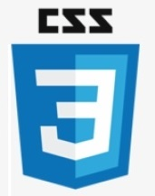
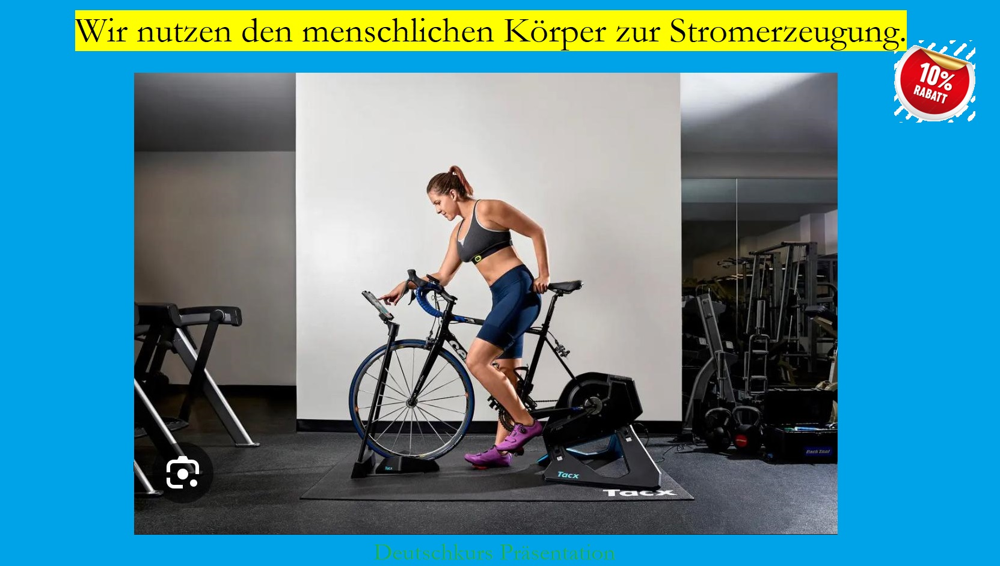

Sanaa Stanezai

I build things the way I hike: one deliberate step at a time, and always looking at the bigger view.
 Projects
Projects

I build things the way I hike: one deliberate step at a time, and always looking at the bigger view.
Projects
My path into software crossed three countries: born in Afghanistan, raised 13 years in California, now building the next chapter in Switzerland. I hold a B.S. in Computer Science with a minor in Mathematics from San José State University, focused on systems engineering and backend development. I love watching an unclear problem turn into a working system, but I want that work to matter: protecting data, supporting real operations, building tools that actually help people. I'm early in my career and looking for a team where I can contribute, ask good questions, and keep growing as an engineer. Currently seeking junior software engineering roles in Switzerland.
Review Resume Visit my Work
I've worked on autonomous navigation systems using ROS, Jetson, and LiDAR during an internship at Santa Clara University's Robotics Systems Lab, and did systems engineering work at Zeda Inc. On the project side, I built Gravity Hoops, a sensor-based basketball game for Android written in Java, and co-built a Faculty Office Hours Manager using JavaFX as part of a team. I've also stayed involved in community: serving as Chair and PR Chair for SWE++ at SJSU, and Secretary for the AI Club at Ohlone College.
PHP was the main programming language while I was pursuing my Internship with DCM, Besides that in specialization period of my bootcamp course with Powercoders I worked in PHP.

Python, it's one of my favorite programming languages, I also developed a sudoku game but not with Dynamic solutions. Python is a very strong programming language and more human readable.

JavaScript is also one of my favorite programming languages, I learned Javascript in Kardan University, however with Powercoders I expanded my Javascript knowledge
SQL stands for Structured Query Language. if its Oracle, SQL Server, or Maria DB, you definitely need SQL to retrieve, modify, or save data into tables, I learned SQL at Kardan University and I am consistently benefiting from the gained Knowledge.

HTML stands for HyperText Markup Language. Its the first ever Markup language that I used to code while I was at school, my favorite tag was <marquee> 💗.

CSS, Once you have a plain text and when you need to add styles and its CSS, I learned CSS wile doing my Bachelor and I updated my CSS knowledge when I was a part of Powercoders participant.
